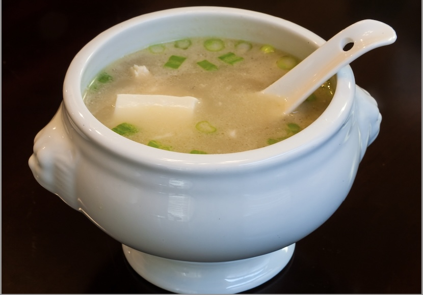

Clear Fish Noodle Soup

Simple fish clear soup which can comfort during a tough cold. Just boil fish and vegetables of your choice along with some aromatic spices to create a flavorful broth
Ingredients
- basa fish fillets
- sliced carrots
- sliced bell peppers
- star anise
- fresh ground pepper
- green chilly
- butter
Steps
- Add fish fillets in a bowl with water
- Add sliced carrots and bell peppers
- Add 3 star anise, some fresh ground pepper and one sliced green chilly to the bowl
- Boil over high heat
- Once the fillets turn soft and opague in the middle remove the soup
- Add a slice of butter and stir till dissollved
- Enjoy and get well soon :)